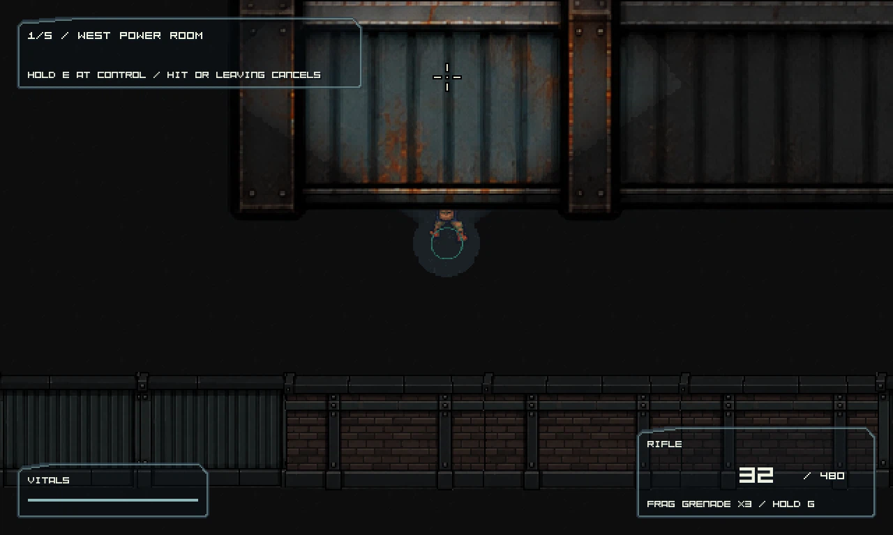
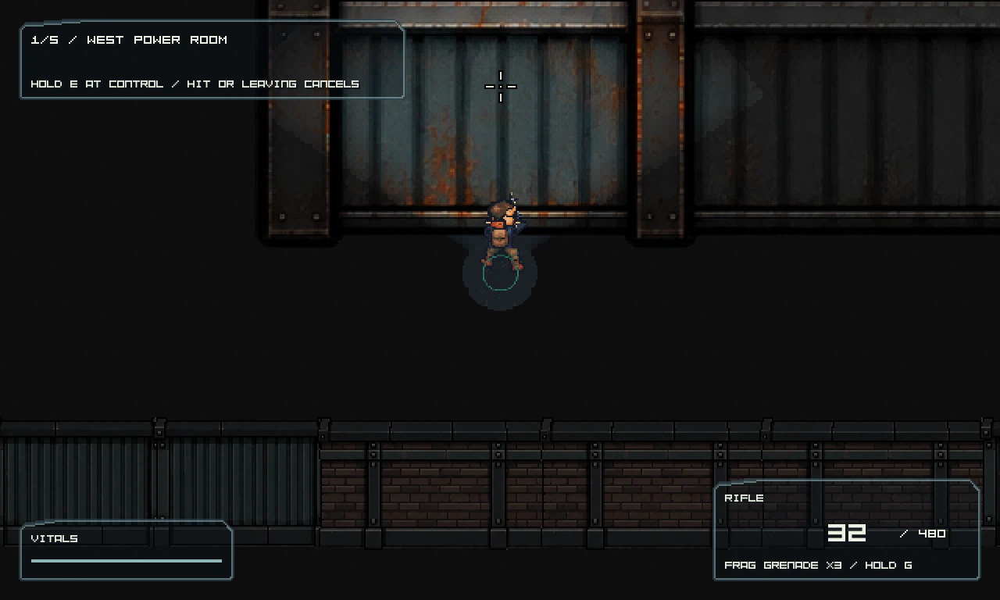
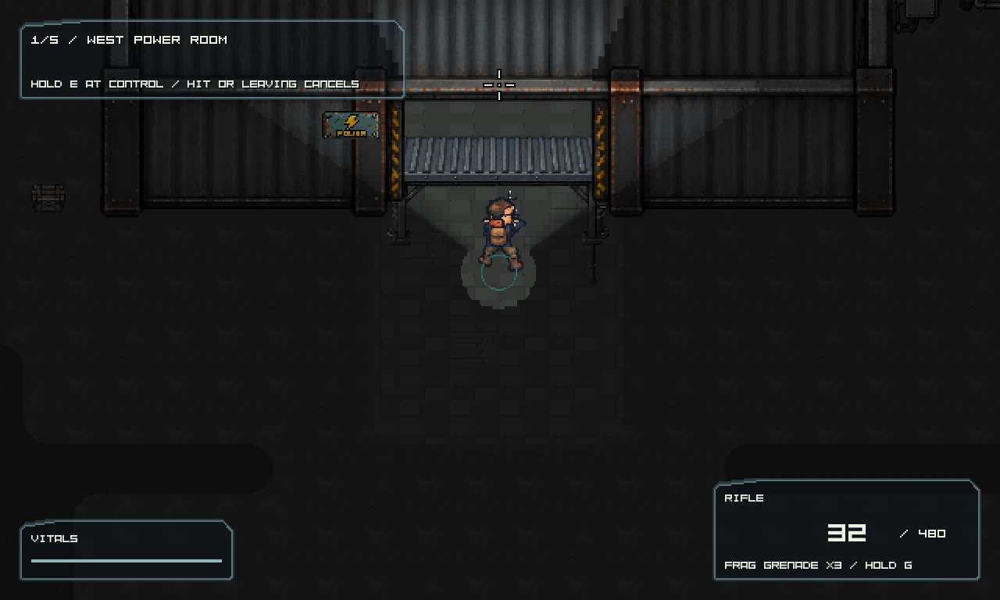
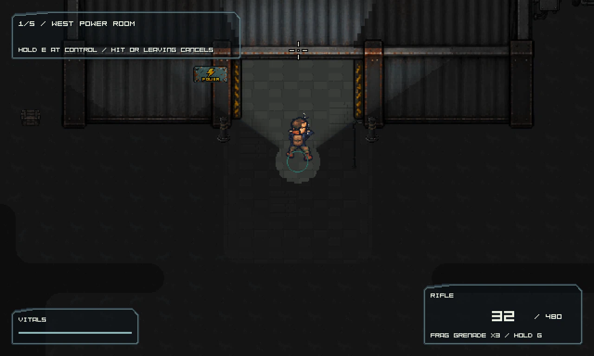
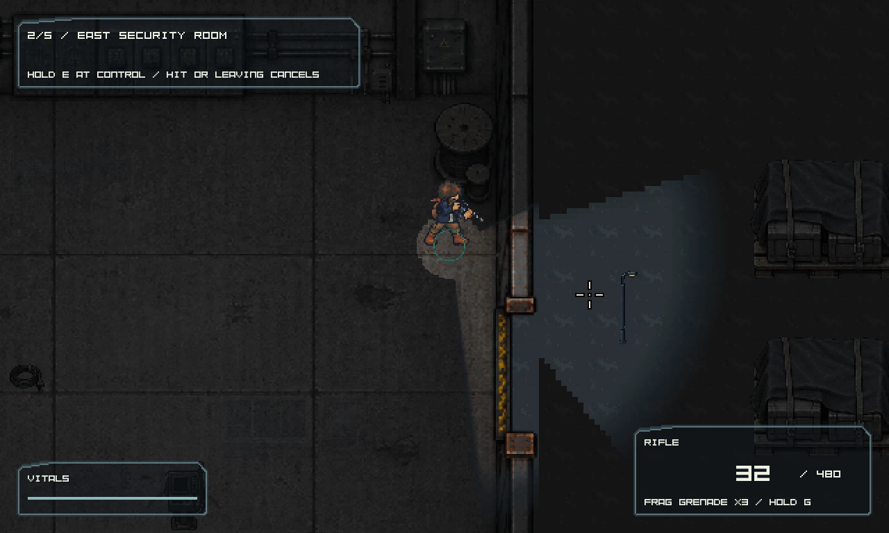
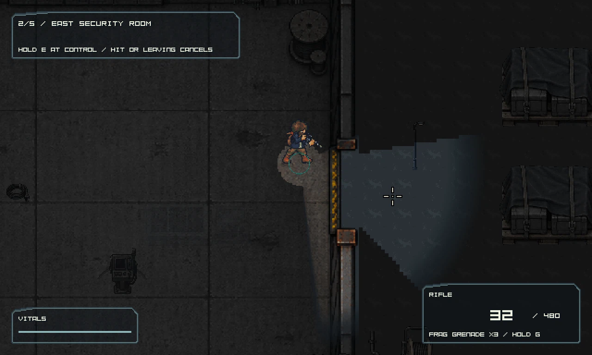
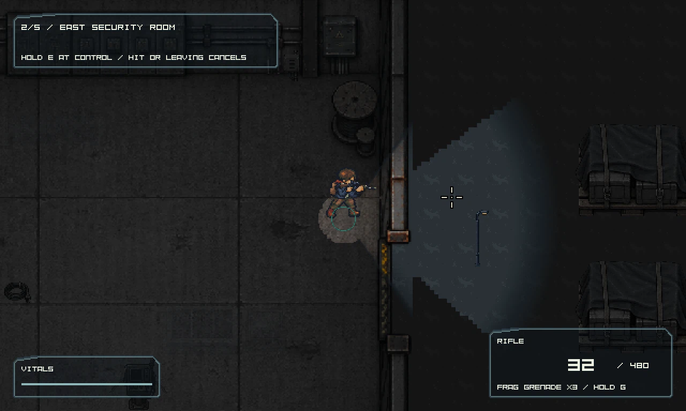
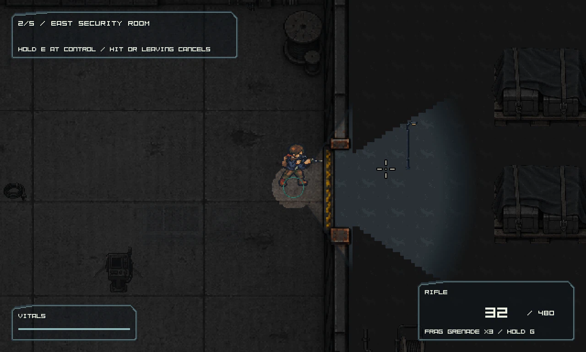

Roof depth and cutaway
Both building roofs now use schema 10 world-depth composition with their existing cutaway bindings. The exterior survivor remains visible in front of the facade while the roof still fades through the established cutaway.
This focused fix addresses roof occlusion at the security facade, the pinched south entrances, and the workshop east-door opening mismatch.
Scoped visual correction passed; both escape routes verifiedBoth building roofs now use schema 10 world-depth composition with their existing cutaway bindings. The exterior survivor remains visible in front of the facade while the roof still fades through the established cutaway.
Both south-entry canopy placements and their support footprints were removed. Bollards were moved to clear the threshold approach while retaining their authored props and collision semantics.
The opening and route alignment now follow the measured PNG aperture: the former metadata span of local y 192–289 disagreed with visible art at about 264–342. The route coordinates were moved with the corrected opening.








The workshop east opening is deliberately not compared at identical player coordinates. In the baseline, the two recorded player y positions were 2576 and 2608; in the candidate they are 2640 and 2672, respectively, after relocating the logical opening to match the PNG. Compare the visible doorway and passage at each capture, not the same numeric y coordinate.
Read the art registration audit and world-depth source review for measurement and implementation details. This board does not claim whole-map visual quality, human traversal acceptance, combat-pacing acceptance or FPS acceptance.
Stable Release checks passed: 474 tests / 2,573,258 assertions on 1,786 unchanged inputs. The native probe passed with 30 captures, 5,032 sampled approach-clearance checks, and explicit LOS assertions for the corrected and former doorway. Both full application routes reached extraction with authored pressure. All 4,998 source/bundle comparisons match.
Direct route: 16,470 ticks, peak 128 living zombies, 669 shots and 182 deaths. Service route: 17,959 ticks, peak 116 living zombies, 672 shots and 194 deaths. These are automated encounter checks, not human playtests.
Performance remains open. Gate B opening averaged 9.1 FPS on the direct run and 50.7 on the subsequent service run without a code change. These uncontrolled timings do not establish a cause or support consistent all-route >20 FPS acceptance.